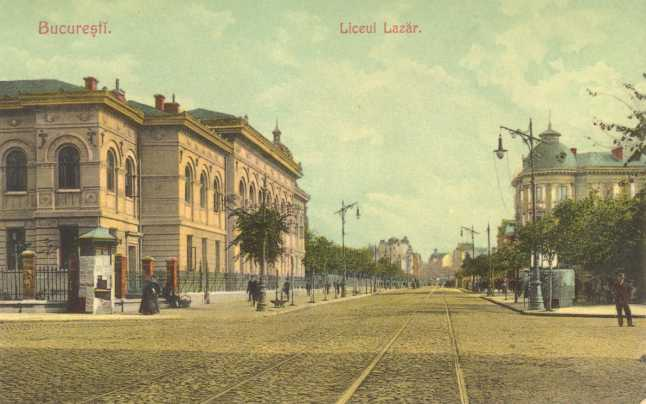
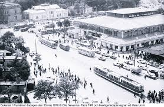
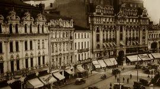

Bucureşti 555. Capitala de ieri, de azi, de mâine..
Unul din miturile fundamentale româneşti este cel al Meşterului Manole, al sacrificiului de sine pentru a lăsa ceva durabil. Oraşul Bucureşti, atestat documentar în secolul al XV-lea, devenit capitală a Ţării Româneşti, după Curtea de Argeş şi Târgovişte, iar din 24 ianuarie 1862 capitala României nu face excepţie, deoarece, pentru oricine se apleacă asupra istoriei sale, această imagine se poate desfăşura în toată splendoarea sa.
La finalul secolului al XIX-lea şi în primele două decenii ale secolului XX, capitala României s-a dezvoltat în spiritul arhitecturii franceze, urmare a faptului că majoritatea marilor arhitecţi români îşi făcuseră studiile în Franţa, considerată drept model de către intelectualitatea română a timpului.
Istoricul Neagu Djuvara a apreciat într-un interviu că municipiul Bucureşti a evoluat de la o aşezare urbană medievală apărată de păduri şi lacuri, la un oraş mare, modern în care se întâmpla foarte des ca vechiul să lase loc noului. În viziunea acestuia, un prim pas spre modernizare s-a făcut odată cu primii boieri care au avut ocazia să călătorească în Occident, în perioada 1820-1830, aşa cum a făcut-o boierul Constantin Radovici, mai cunoscut ca Dinicu Golescu, autor al lucrării ”Însemnare a călătoriei mele”. Redăm, în acest sens, opinia istoricului Neagu Djuvara: „Şi pe urmă să ştiţi ceva: românul dărâmă totdeauna ceea ce a clădit taică-său sau bunicu-său. La sfârşitul veacului al XVIII-lea şi începutul veacului al XIX-lea, când nu începuserăm încă occidentalizarea, erau câteva palate boiereşti în Bucureşti, care, după gravurile pe care le avem şi după descrieri, în special ale faimosului Ion Ghica (bei de Samos, de mai multe ori prim-ministru, un mare scriitor român), din descrierile lui se înţelege că erau totuşi destul de originale, clădiri imense cu acareturi, cu grajduri. În fine, erau nişte monumente în sine. De îndată ce românul a scăpat puţin de apăsarea tutelei otomane şi a început să călătorească în străinătate, deci prin anii 1820-1830, primii boieri care au plecat din ţară şi au călătorit în Occident au dărâmat casele părinţilor şi bunicilor ca să facă o altă casă”
Istoricul amintit a precizat şi faptul că la Bucureşti au existat iniţaitive pentru organizarea de concursuri de urbanism. Un astfel de concurs a fost cel din 1906, cu doi ani înaintea unuia similar organizat la Berlin şi cu 13 ani înaintea Parisului. În 1939, la Expoziţia Internaţională de la Liege, capitala României a obţinut Medalia de Aur pentru „Canalizare” şi Marele Premiu al Expoziţiei pentru „Lucrări Edilitare”.
"Perioada interbelică a fost marcată de încercarea de reînviere a stilului românesc, aşa cum este cazul Palatului Elisabeta, care îmbina stilul brâncovenesc cu stilul maur, în perioada domniei Regelui Carol al II-lea."
După cel de-Al Doilea Război Mondial, oraşul Bucureşti a trebuit să se supună influenţei arhitecturii staliniste (Casa Scânteii), fiindu-i mărită considerabil aria de locuire spre zone care constituiseră cândva localităţi distincte.
O altă schimbare fundamentală s-a produs în perioada în care la conducerea României s-a aflat Nicolae Ceauşescu. Acesta a iniţiat un vast program de sistematizare, dorind să modifice complet imaginea capitalei, potrivit propriei sale viziuni. Astfel, au fost edificate Hotelul Intercontinental, „Casa Poporului” -actualul Palat al Parlamentului, de la care pornea bulevardul ce urma a se numi „Victoria Socialismului”.
Totodată, în marile zone populate, s-a preconizat construirea unor mari ”complexe agroalimentare” cu rol de pieţe pubilce pentru „oamenii muncii”, supranumite „Circurile Foamei”.
Toate aceste construcţii s-au făcut cu preţul demolării a unei mari părţi din casele tradiţionale, unele adevărate bijuterii arhitectonice, al dispariţiei unor monumente istorice şi chiar al unor întregi cartiere.
În plus, au fost construite platforme industriale şi institute de cercetare, care la rândul lor, au coagulat, în vecinătatea lor, aglomerări de locuinţe, ducând la dezvoltarea pe orizontală a oraşului spre vechile periferii, devenite cartiere ale Capitalei României.
"O provocare esenţială pentru urbanismul bucureştean au reprezentat-o reţeaua rutieră şi sistematizarea Dâmboviţei."
Sistemul de drumuri nu a putut ţine pasul cu exponenţiala creştere a numărului de autoturisme, a mijloacelor de transport în comun. Capitala României nu are încă o centură modernă care să permită accesul rapid în diversele puncte de interes (de tipul celei numite „Racordo Anullare” din Roma), iar centura ocolitoare e departe de a fi terminată, nereuşind să asigure tranzitul între Autostrăzile A1 şi A2. Este evident că municipiul Bucureşti a trebuit să plătească preţul greu al tranziţiei şi al întârzierilor legislative. Chestiunea „caselor naţionalizate”, tergiversarea proceselor, intrarea edificiilor de patrimoniu în mâna speculanţilor imobiliari, indiferenţa chiriaşilor care în lipsa unei legislaţii menite să îi protejeze nu au reparat casele în care locuiesc au dus ca multe clădiri din „centrul istoric” să arate dezolant.
În plus, nu se poate să nu amintim paragina în care se găseşte Hotelul „Concordia”, locul în care, la 24 ianuarie 1859 s-a decis alegerea colonelului Alexandru Ioan Cuza ca domnitor al Ţării Româneşti, după ce la 5 ianuarie 1859 fusese ales în Moldova, precum şi starea deplorabilă a fortificaţiilor construite în timpul Regelui Carol I.
Să amintim şi faptul că desele sistematizări au făcut ca să nu fie valorificate numeroasele pasaje subterane care legau principalele puncte ale Capitalei după demolarea unor edificii de patrimoniu (palate, mănăstiri etc), de-a lungul diverselor epoci. Oraşul Bucureşti a ajuns astăzi în era turnurilor şi a clădirilor realizate din beton şi sticlă. O parte din fostele „Circuri ale Foamei” au căpătat destinaţia de „Mall”. Multe din fostele zone industriale atât din oraş, cât şi din periferie au lăsat locul marilor ansambluri rezidenţiale, piaţa imobiliară „explodând” în anii 2007-2008, înainte de începutul crizei economice mondiale.
La nivelul anului 2011 se considera că în Bucureşti erau circa 3000 de ha, care puteau avea destinaţie pentru construcţii, ceea ce reprezenta aproximativ 15 % din totalul suprafeţei oraşului. Arhitectul şef al Sectorului 3, la acea dată, domnul Ştefan Dumitraşcu declarase pentru Agenţia Mediafax faptul că oraşul Bucureşti se situa cu mult sub media europeană la capitolul „spaţii de birouri, retail şi infrastructură hotelieră”. Tendinţa actuală este de a dezvolta clădiri moderne pentru birouri şi locuinţe. Andrada Ghirea consemna pentru economica.net faptul că în Bucureşti se preconiza construirea de clădiri cu înălţimi între 70 şi peste 100 de m cu un număr de etaje între 23 şi 34.
Pe scurt, municipiul Bucureşti s-a dezvoltat, începând de la oraşul medieval apărat de „lacuri şi păduri”, la târgul modern, cu străzi pavate în centru şi mahalale în periferie (populate de meseriaşi şi de oameni falaţi în căutarea unei surse de existenţă), pieţe, cu o viaţă socială gravitând în jurul mănăstirilor fortificate, pieţelor şi Dealului Mitropoliei. A continuat apoi transformarea sa cu oraşul sfârşitului de secol XIX şi al primei jumătăţi a secolului XX, supranumit „Micul Paris”, nu neapărat din cauza arhitecturii, cât, aşa cum remarca Neagu Djuvara, din cauza „eleganţei şi luxului” afişate de elita bucureşteană antebelică şi interbelică.
Capitala a cunoscut apoi influenţa sovietică şi naţional-comunistă, aceasta afectându-i iremediabil imaginea.
După decembrie 1989, municipiul Bucureşti a cunoscut, pe lângă greutăţile politico-economice ale tranziţiei, schimbarea spre modernitate, prin ansambluri rezidenţiale şi de afaceri specifice lumii occidentale.